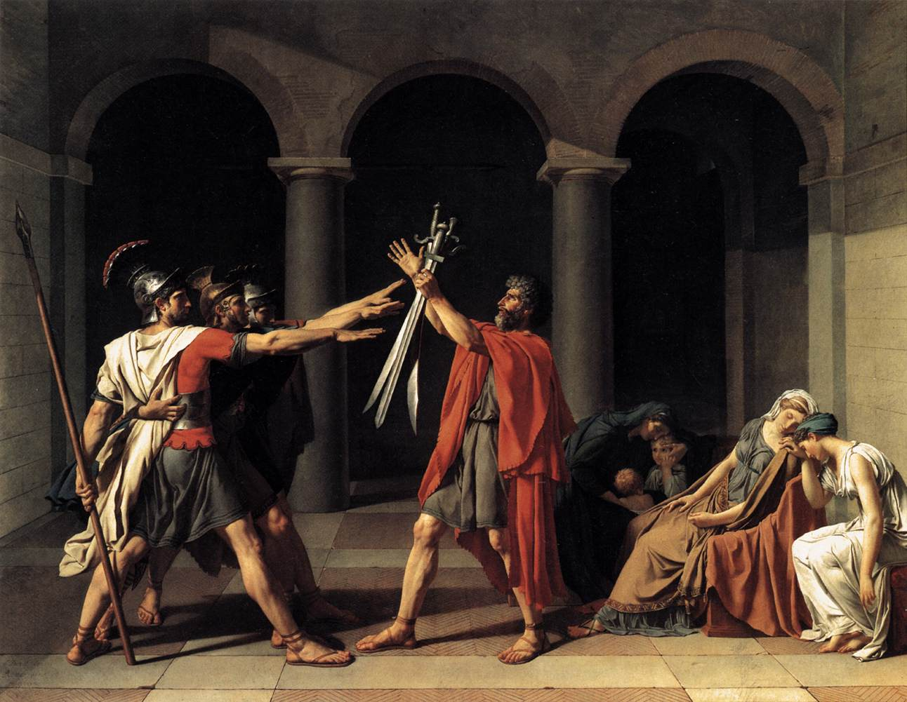

This instructor begins with only a course outcome and a visual resource. The Interactive Design Map makes the next design decisions visible before and during a focused first build.

Jacques-Louis David, Oath of the Horatii, 1784. Public-domain reproduction via Wikimedia Commons.
01
Interactive Design Map
Learning Context
Why this activity exists
Introductory art-history students need guided practice moving beyond naming formal elements toward using visual evidence to support an interpretation. This short, formative activity prepares students for class discussion and later visual-analysis writing. The activity should help learners connect compositional choices to a work's possible meaning rather than memorize isolated vocabulary terms.
Interaction Design
What learners do
Learners examine the painting and select visual details that support an interpretive claim about civic duty, conflict, and private grief. They compare possible claims, identify the strongest evidence, and receive brief explanation-based feedback. A final transfer item asks learners to choose the most persuasive evidence for a new claim without guided markers.
Expert Content
What the artifact must accurately use
Use the supplied image of David's Oath of the Horatii (1784). Include instructor-verified visual-analysis vocabulary: composition, gesture, line, balance, spatial separation, emphasis, and contrast. Build feedback around visible features of the work: the rigid, grouped figures at left; the father and raised swords at center; the seated women and children at right; and the architectural divisions that organize the scene. Avoid treating interpretation as a single unquestionable answer; explain how particular visual evidence can support a claim.
Artifact Specification
What the finished artifact must be and do
Create a concise, 5–8 minute formative activity for Canvas. The artifact must be keyboard accessible, responsive on smaller screens, and usable without drag-and-drop. Provide text-based alternatives to any image hotspots or visual selections. Do not use time limits, decorative animation, external links, or unverified art-history claims. Package as a Canvas-compatible SCORM 1.2 activity that reports completion after the learner reaches the final transfer item.
Ideate. Iterate. Implement.CASE STUDY
first-build brief
The Map Becomes a Testable First Build
The four design categories constrain different kinds of AI variation: instructional purpose, learner behavior, expert content, and artifact requirements.
First-Build Brief
Design Map → First-Build Brief
Create a concise, accessible SCORM 1.2 learning activity for an introductory art-history course. The activity supports this outcome: Students will analyze how formal visual elements contribute to meaning in a work of art.
Use the supplied image of Jacques-Louis David's Oath of the Horatii (1784) as the central expert resource. Design the activity for students who are new to formal visual analysis and need guided practice using visual evidence to support an interpretation.
Begin with a short orientation that introduces the task: learners will examine how compositional choices can support claims about civic duty, conflict, and private grief. Use instructor-verified vocabulary where relevant: composition, gesture, line, balance, spatial separation, emphasis, and contrast.
Create a guided evidence-selection interaction. Learners should examine visible features of the painting, including the rigid grouped figures at left, the father and raised swords at center, the seated women and children at right, and the architectural divisions that organize the scene. Ask learners to select visual details that best support an interpretive claim, then explain why each detail is stronger or weaker evidence.
Do not treat interpretation as a single unquestionable answer. Feedback should explain how a selected visual feature may support a claim and distinguish between a plausible observation and evidence that is too vague, inaccurate, or unsupported by the image.
Include a final transfer item without guided markers. Present a new interpretive claim and ask learners to select the most persuasive visual evidence from the painting to support it. Provide explanation-based feedback after the response.
Requirements
Keep the activity to approximately 5–8 minutes.
Make it responsive and keyboard accessible.
Do not rely on drag-and-drop, time limits, decorative animation, or external links.
Provide text-based alternatives for all image hotspots or visual-selection interactions.
Use clear, high-contrast visual design and concise directions.
Package as a Canvas-compatible SCORM 1.2 activity.
Mark the activity complete when the learner reaches the final transfer item.
Do not invent art-history facts or use content beyond the supplied image and the stated visual-analysis guidance.
What the prompt now controls
Learning Context
A formative activity for novice art-history students preparing to analyze visual evidence.
Interaction Design
Guided evidence selection, explanation-based feedback, and a final transfer task.
Expert Content
A specific artwork, visual vocabulary, observable details, and careful interpretive boundaries.
Artifact Specification
A short, accessible, Canvas-compatible SCORM activity with completion reporting.